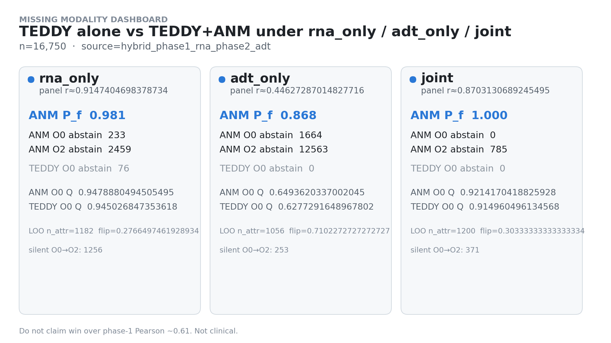
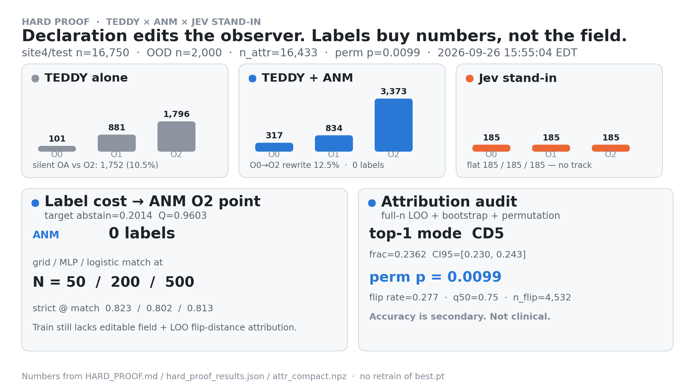

TEDDY alone
Panel rules. Silent over-answer. No declared LOO.
TEDDY freezes a CITE map (z512 = mean-pool last-layer @1024, phase-1 full-ADT Pearson ~0.61). Mode B: ANM edits the decision field on that typed evidence — call, abstain, markers, scope — without retraining TEDDY and without claiming Pearson > ~0.61 (not Mode A).

finite_field decisionsz_512 alone is insufficient on must-separate pairs → veto → complement → verify (interactive)z512 = mean-pool last-layer tokens @ context 1024 (not pretrain 2048, not disease token). ADT-only is weak; the abstain story is honest.
Numbers: HARD_PROOF · SCOPE_REFINE · MISSING_MODALITY · REVERSE_STEP1 · REVERSE_LOOP_SMALL · MODE_B_SCOPE
Holdout site4/test n=16,750. Accuracy secondary on every case.
Panel rules. Silent over-answer. No declared LOO.
YAML observers. Abstain tracks declaration. Full-n LOO.
Needs O2 labels. Abstain stuck at 185. No editable field.
Same frozen δu. Change the declared observer — not the backbone.

Collaborators shift O0→O1→O2 on the same TEDDY evidence. ANM abstain tracks the YAML observer; Train stays flat; TEDDY-alone over-answers where the new observer abstains.

Weak channel → honest silence. Reverse diagnosis, not a Pearson contest.

Under weak adt_only, TEDDY-alone abstain = 0 while Q ≈ 0.63.
ANM abstain jumps to 1,664 and mean Pf drops — silence over silent over-answer.


Which surface marker flipped the call — LOO on the declared field.

Closed-form leave-one-out on the editable observer — not SHAP, not residuals. Matching abstain numerically still does not buy attribution.


Raise τ on soft_P — spend follow-up budget on trustworthy cells.

Conditional Q climbs as coverage shrinks. Flip-sensitive cells (ANM LOO) are a harder scope than a random same-n draw.
No dedicated GIF — numbers are the primary artifact. SCOPE_REFINE_PROOF.md · HARD_PROOF dashboard.
Adopt O2 with a YAML edit. Train can match numbers — only by burning labels.

ANM already sits at abstain≈0.201 / strict≈0.821 with zero new endpoint labels and an editable field. Numerical match ≠ criterion ownership.

z_512 isn’t enoughTEDDY places myeloid and T cells at cosine 0.982. ANM vetoes that as sufficient, adds typed true-ADT evidence + an editable observer, and verifies on the same pairs. Mode B only.
Nearby z_512 ⇒ same biology ⇒ same call.
Test: take kNN pairs at cos ≥ 0.98 and check them against held-out true ADT. This must-separate autopsy was the strongest of four cheap probes (0.581, rank 1).
z_512 is insufficient: near-identical z, disagreeing true lineage.
Readout must abstain, rewrite the observer, or admit a complement evidence channel.
Three cheap arms. Only typed evidence + observer moves the decision.
Bars = myeloid↔T false_agree (lower is better). z⁺ separates the fixed list geometrically but globally worsens must-rate (relative reduction −0.27) — geometry ≠ decision.
Same 1,490 pairs. Winner: true-ADT typed + O1.
All 5,000 pairs: false_agree 0.893 → 0.586 · Q 0.808 → 0.990 · soft_sep 0.167 → 0.469. No TEDDY retrain.


Mode B wins on decision / abstain / attribution / zero-label transfer — not Pearson > 0.61, not Mode A.
O0→O2 rewrite 12.48% via YAML only.
ANM 317→834→3,373; Train stuck at 185.
Full-n LOO n=16,433 · flip 0.277 · p≈0.0099.
ANM 0 labels vs Train ≈50–500 for numerical match only.
Myeloid↔T must-pairs: false_agree 0.85→0.40 · Q 0.74→0.99 with typed true ADT + O1.
z⁺ alone worsens global must-rate (relative reduction −0.27).
TEDDY typed evidence → finite_field; YAML observers; missing-modality abstain; LOO on decisions.
Mode A residual/Jacobian/gene perturbs · ±ε G1–G4 · reverse loop as representation response · fusion audit · ATAC. The Mode B decision loop (veto→complement→verify) is in — see 6 · Decision loop.
Does not retrain best.pt. Needs local ANM on PYTHONPATH.
Criteria: bridge_anm/readouts/cite_lineage_O{0,1,2}.yaml · regenerate story PNGs: python scripts/make_story_infographics.py · loop posters: /usr/bin/python3 scripts/make_anm_helps_teddy_loop_figures.py